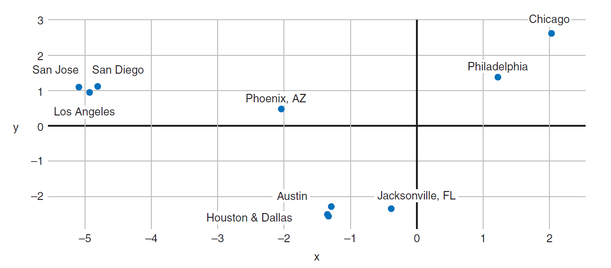

5.5 Word2Vec Practical Considerations
Negative sampling, window size, and other training tricks.
These notes walk through the lecture slides. The original deck is unchanged; use (slides) on the course hub if you want that PDF.
1. The two recipes, in production
Mikolov’s own guidance, which this course repeats:
- Skip-gram if the corpus is small or you care about rare words. More pairs per window means more updates for those rare types.
- CBOW if you care about frequent words and wall-clock time. One pooled example per window is cheaper.
Neither recipe scales if you treat every token and every negative class equally. Three tricks make Word2Vec usable on Wikipedia-scale text: phrase tokens, subsampling, and negative sampling.
Sources: Practical Natural Language Processing and Natural Language Processing in Action.
2. Frequent bigrams as single tokens
Some pairs are almost one word. Elvis is usually followed by Presley. Predicting Presley from Elvis (or the other way) teaches the model very little. The pair should be one vocabulary item: Elvis_Presley.
Score candidate bigrams and glue the ones that pass a cutoff:
is a discount so that a pair that appeared once by chance does not look like a phrase. You can run the same idea on trigrams. gensim’s Phrases is the usual implementation.
After this step the “vocabulary” includes both unigrams and a handful of glued phrases. CBOW and skip-gram then run as before.
3. Subsample frequent tokens
the and a sit next to almost every noun. If you train on every occurrence, the space fills with a false “everything is a little like the.” That is the same problem IDF solves for count vectors.
Mikolov keeps token in a given window with probability that falls as frequency rises:
is the corpus frequency. is a threshold; to is the usual range. Raise on a small corpus, lower it on a huge one. Tokens rarer than are always kept.
The effect is IDF-like: rare content words drive the vectors. Stop words still appear, just less often.
(The lecture slide writes in the square root. Same quantity: frequency of the token you are deciding to keep or drop.)
4. Negative sampling
A full softmax updates every output weight on every example. With a million types that is a million updates for the pair (painted, Monet). Almost all of those types were not in the window. You do not need their gradients.
Negative sampling keeps the positive pair and draws words that were not in the window. You update only those output rows. The task becomes: the true neighbor should score high; the random draws should score low (logistic / sigmoid, not a full softmax).
| Corpus size | Typical |
|---|---|
| Small | 5–20 negatives |
| Large | 2–5 negatives |
Quality holds up. Training time drops by orders of magnitude. This is why the Word2Vec papers could train on news crawls.
5. What you actually ship
After these tricks you still only ship the embedding matrix: one row per type (and per glued phrase). Look up, cosine, maybe average the rows in a sentence for a cheap document vector.
Pretrained vectors (Google News, fastText, GloVe) already used some version of these ideas. If you train your own on domain text (clinical notes, legal filings), turn the three tricks on. A vanilla full-softmax Word2Vec on raw tokens will be slow and muddy.

Week 6 leaves representation and asks how to classify documents, first with the sparse vectors from Week 4, then with networks.
6. Practice
-
Why does glueing New + York into one token help skip-gram more than leaving them separate?
-
A token has frequency far above . Does equation (section 3) make it more or less likely to appear in a training window?
-
You have 2 million types and 5 negatives. How many output embeddings are updated on one skip-gram pair, versus a full softmax?